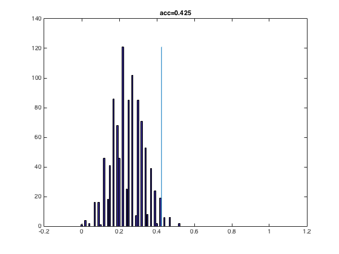

Permutation test example
A simple example of running a permutation test to determine the signifance of classification accuracies
- For CoSMoMVPA's copyright information and license terms, #
- see the COPYING file distributed with CoSMoMVPA. #
Contents
Set the number of permutations
niter=1000;
Define dataset, classifier, partitioner
config=cosmo_config(); data_path=fullfile(config.tutorial_data_path,'ak6','s01'); data_fn=fullfile(data_path,'glm_T_stats_perrun.nii'); mask_fn=fullfile(data_path,'vt_mask.nii'); ds=cosmo_fmri_dataset(data_fn,'mask',mask_fn,... 'targets',repmat(1:6,1,10),... 'chunks',floor(((1:60)-1)/6)+1); % remove constant features ds=cosmo_remove_useless_data(ds); % Only consider four classes (otherwise the classifier does extremily well) ds=cosmo_slice(ds,ds.sa.targets<=4); classifier=@cosmo_classify_nn; % for more speed, just do odd-even partitioning partitions=cosmo_oddeven_partitioner(ds);
compute classification accuracy of the original data
[pred, acc]=cosmo_crossvalidate(ds, classifier, partitions);
prepare for permutations
acc0=zeros(niter,1); % allocate space for permuted accuracies ds0=ds; % make a copy of the dataset
for niter iterations, reshuffle the labels and compute accuracy
Use the helper function cosmo_randomize_targets >@@>
for k=1:niter ds0.sa.targets=cosmo_randomize_targets(ds); [foo, acc0(k)]=cosmo_crossvalidate(ds0, classifier, partitions); end % <@@< p=sum(acc<acc0)/niter; fprintf('%d permutations: accuracy=%.3f, p=%.4f\n', niter, acc, p); bins=0:10/niter:1; h=histc(acc0,bins); bar(bins,h) hold on line([acc acc],[0,max(h)]) hold off title(sprintf('acc=%.3f',acc))
1000 permutations: accuracy=0.425, p=0.0180